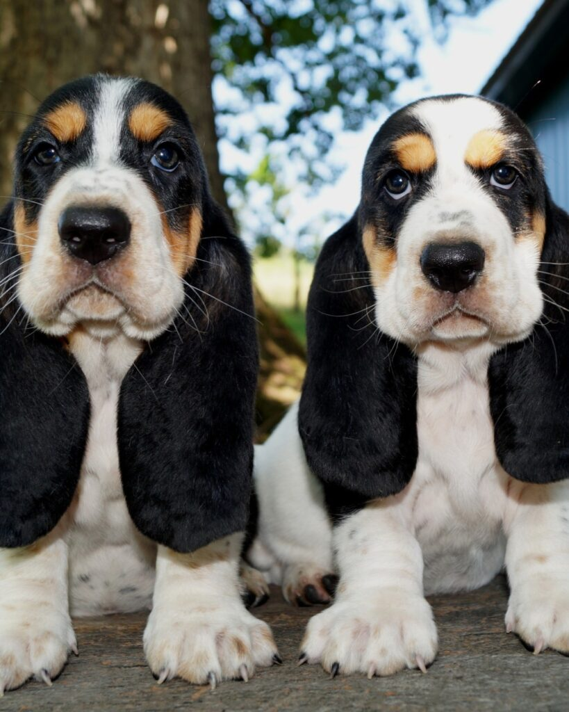

Temperament
Usually gentle, social, and devoted, with an independent streak that rewards patience over pressure.
Basset Hounds are affectionate companions with a distinct personality. Knowing the full picture helps families decide whether this charming breed fits their lives.
Usually gentle, social, and devoted, with an independent streak that rewards patience over pressure.
Developed as scent hounds, Bassets were valued for a steady pace and an exceptional nose.
Moderate daily walks and sniffing time suit most adults, with care for joints and growing puppies.
They enjoy companionship and can be vocal when bored. A soft bed near the family is a strong start.

Bassets are not high-energy athletes, but they do need thoughtful care. Their long backs, short legs, heavy ears, and deep chests shape the way they exercise, eat, groom, and grow.
A responsible breeder can reduce risk through testing and selection, but no dog comes with guarantees. We encourage every family to build a relationship with a trusted veterinarian.
Families should learn about weight management, ear care, orthopedic health, skin comfort, and bloat awareness. Ask your veterinarian what prevention looks like for your dog.
They are smart, scent-driven, and sometimes gloriously selective. Short sessions, food motivation, clear boundaries, and a sense of humor go far.
A Basset suits people who enjoy a devoted companion, a slower pace, and a dog whose personality is likely to be the loudest thing in the room.